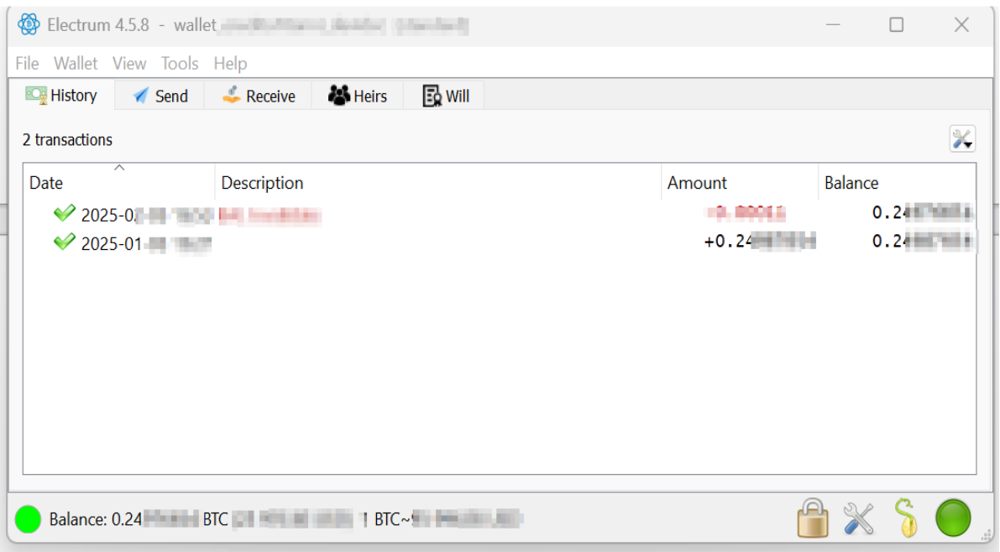
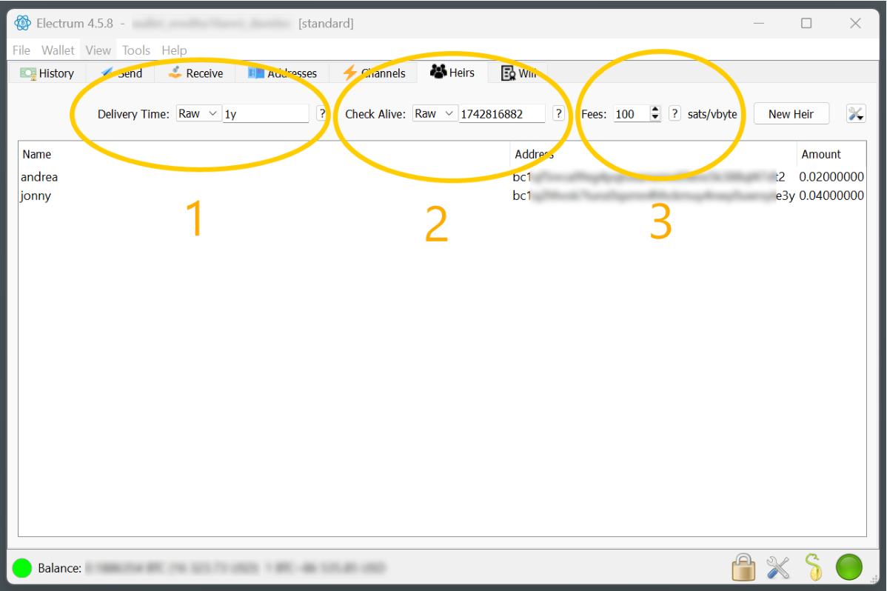
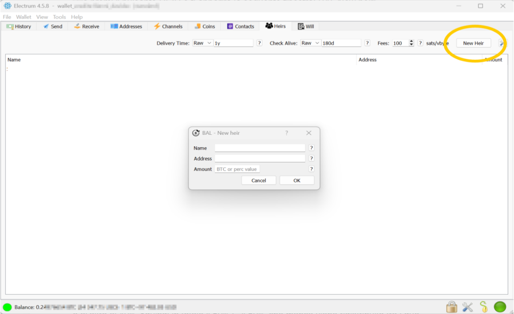
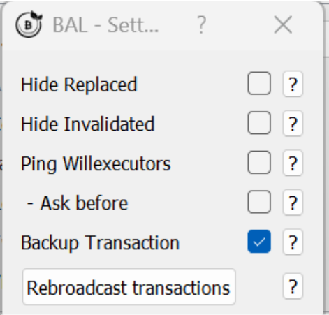
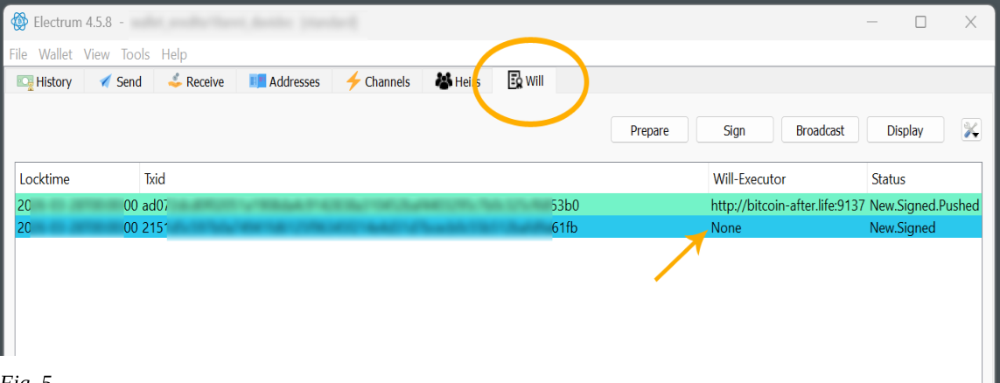
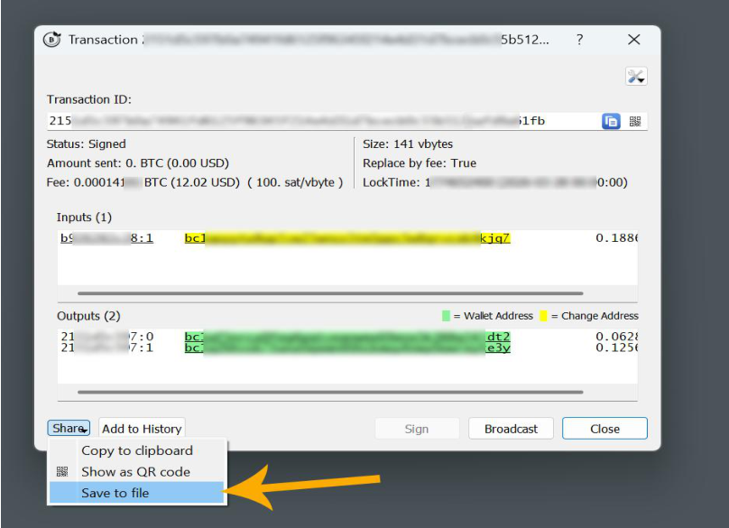
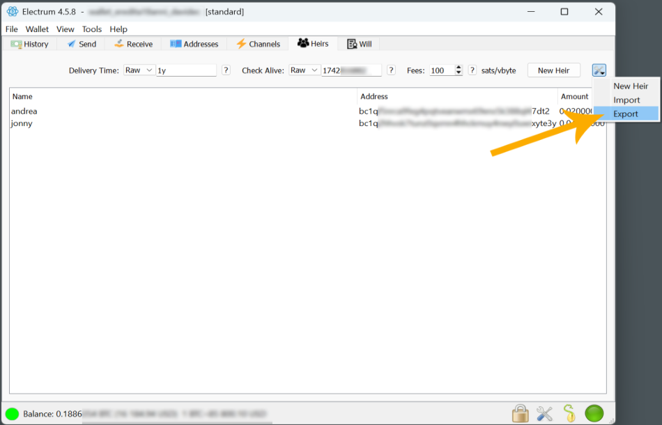
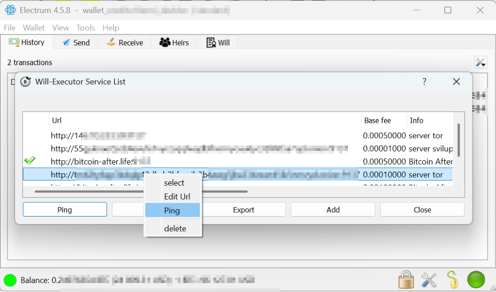
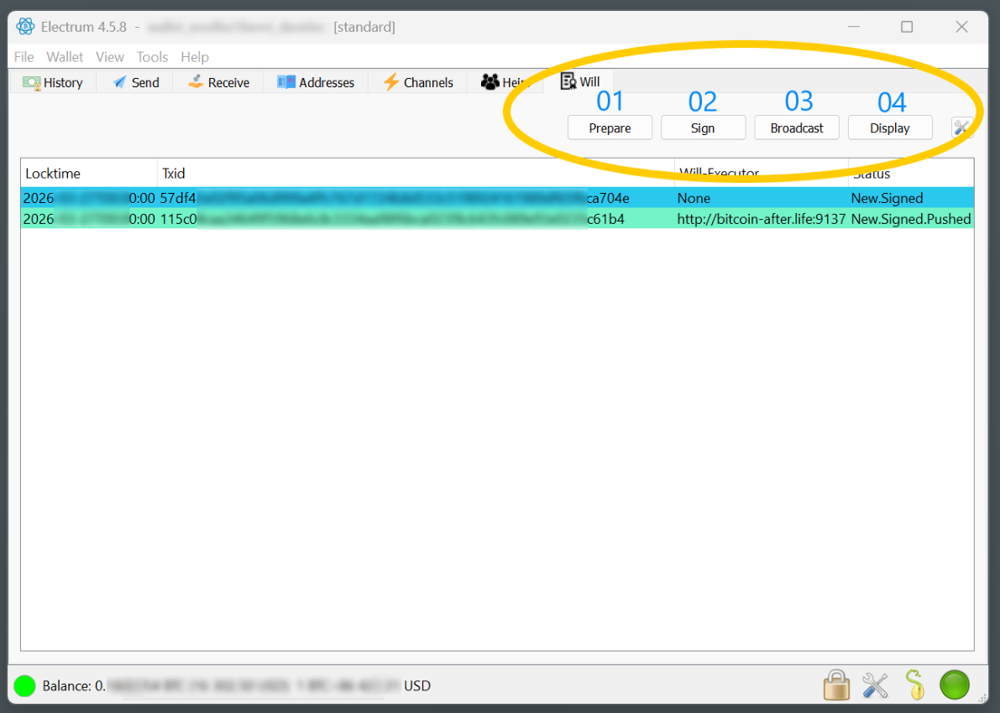
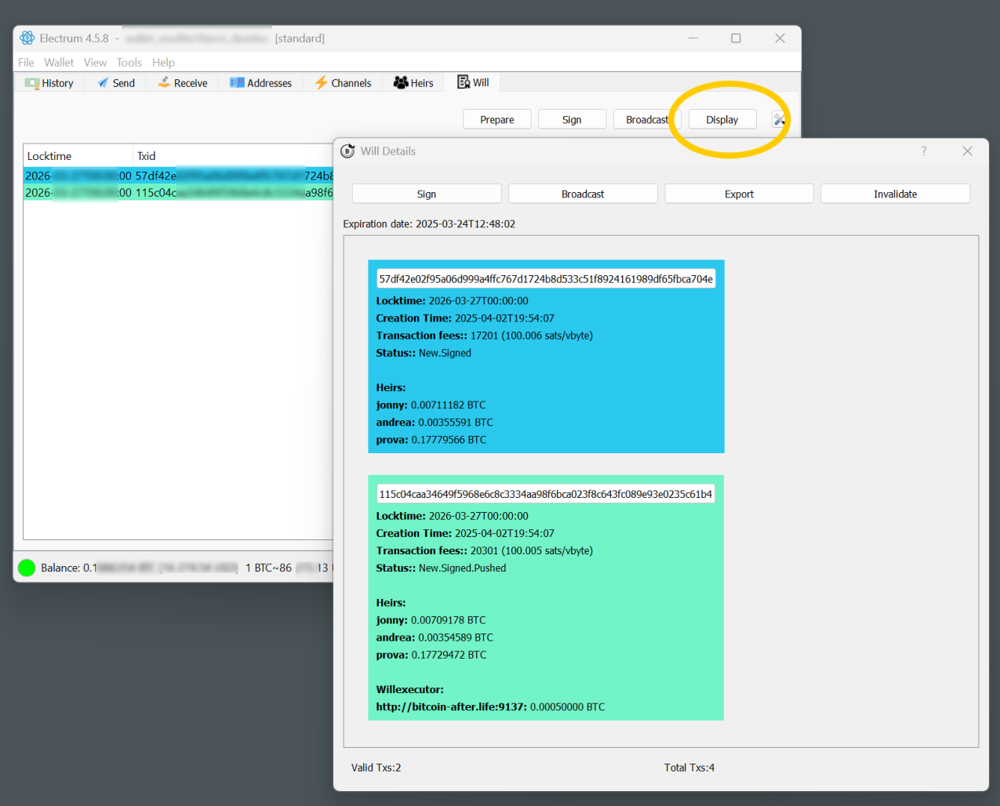

This is the GitHub‑friendly (HTML/Markdown + images) edition of the official BAL user manual. The original PDF lives in the bal_plugin_manual Gitea repository. A styled single‑page version is available as
manual.html.
Welcome to using BAL, the open‑source plugin for Electrum Wallet, dedicated to managing bitcoin digital inheritance.
An open‑source plugin is a software extension that adds functionality to an existing program, and whose source code is publicly available. This means that anyone can view, modify, and distribute the plugin code.
The plugin was designed for Electrum, the Gold standard of Bitcoin wallets.
It was not considered reasonable to proceed with the development of a new wallet or a fork of a wallet (a bifurcation of Electrum's code) so as not to put funds at risk. Instead, we thought it prudent to lean as a plugin on the most tested and therefore secure open‑source Bitcoin wallet (Electrum), trusting that in the future the plugin will be placed directly on Electrum by default.
The steps for installing the BAL plugin are very simple:
Now you are ready to leave your digital legacy to your heirs!

Figure 1 — the screen that appears after starting Electrum with the BAL plugin installed.
As you can see there are now two new tabs (HEIRS and WILL) on the Electrum interface.
NB: Inheritance with the BAL plugin can also be set on a wallet that is still receiving incoming transactions not yet confirmed on the blockchain.
You can leave the default plugin parameters; they are more than fine for 99 % of inheritance cases.

Figure 2 — the parameters on the HEIRS tab: (1) Delivery Time, (2) Check Alive, (3) Fees.
Indicates the date on which the inheritance of your wallet on the blockchain
will be transferred to the recipient. You can enter the inheritance date either
as Relative (example: 1 year from today → RAW = 1y) or as a Precise
Date (Date).
If you choose Raw, you can insert various options based on a suffix:
d: number of days after the current day (e.g. 1d means tomorrow)y: number of years after the current day (e.g. 1y means one year from today)* The locktime can be anticipated to update the will.
(i.e. check whether you are still alive, and then postpone the inheritance.)
This parameter — settable as relative (RAW) or absolute (DATE) — indicates
the time by which the inheritance will not be changed by postponing it.
NB: if you set it negative (i.e. back in time) it is as if it were not there. This can be useful for doing quick inheritance tests.
Example: if you set the inheritance to one year from today and the Check Alive (threshold) parameter to 6 months, then in 8 months — if you open Electrum — the BAL plugin will ask whether you want to update the inheritance date.
Why does it do this? Because it assumes that if you open the Electrum wallet with the plugin, you are still alive, and therefore estimates that you will still live a certain amount of time, so you probably want to postpone the inheritance so as not to transfer it too soon while you are still alive.
Today is January 1, 2025. I set the inheritance for December 1, 2025 (11 months from now) and the Check‑Alive (threshold) at 6 months (so June 1, 2025):
Future case histories:
Denoted in satoshi/vbyte. This parameter indicates the fees that go to the miners to have the transaction validated on the blockchain at the time of inheritance. It is the classic fee/commission you pay every time you send bitcoin to another wallet.
We recommend leaving the default value of 100 sat/vbyte; this way you will be sure the inheritance is accepted by the miners, even on days when the blockchain is saturated and network costs are high. (As of January 2025, that is roughly $25 USD for a wallet without too many UTXOs — a value that allows the tx to be placed on the blockchain even on congested days.)
Automatic sizing to 100 % of the wallet. The plugin always makes sure that ALL the value of the wallet is delivered to the heirs.
NB: if you wanted to send only 80 % of the wallet to the heirs and make 20 % inaccessible forever (bitcoins lost forever — increasing digital scarcity and giving wealth to all bitcoin participants), just set yourself as an heir with a percentage (e.g. 20 %) to an internal wallet address. This also improves the privacy of the transaction, as it is difficult to understand the destination wallets.
Currently BAL version 1.0 does not support this. It is already in development for version 2 of the protocol. In version 2 it will be possible, for example, to stagger the inheritance 10 % per year until the tenth year, or even 1 % per month, month by month for 10 years — as if it were a kind of annuity, but without the need for third parties or intermediaries.
After setting steps 1, 2, 3, press the [New Heir] button and the BAL New Heirs window appears:

Figure 3 — adding a new heir.
Here you enter the following parameters:
NB: You can add several heirs — even 10 or more.
If you change the Delivery Time of a will, when Electrum closes the BAL plugin will notify you that you need to update the inheritance.
👉 For a complete, code‑accurate breakdown of every change (add/remove heir, change percentages, fee, executor, date earlier/later) and whether it costs an on‑chain fee, see the companion Inheritance Options Guide.
If you set, for example, RAW‑1d and it is, say, 5 p.m., the plugin will not
execute the inheritance precisely 24 hours later (5 p.m. the next day) but will
roughly estimate the blockchain block number corresponding to that time — so
with a tolerance of a few hours.
NB: Inheritance is executed on nodes, on average, with a tolerance of about 1 hour after the date/time set in the BAL plugin (because of the 11‑block Bitcoin median).
If you want a quick test run, enter an upcoming legacy date/time (e.g. 18 hours later). For such short intervals the Check Alive could create problems, so set the Check Alive parameter in the past (a date before today) — e.g. a previous month.
I have 2 children, Peter (12) and Arnold (16). I own 10 BTC and want each to receive 5 BTC on their respective 18th birthdays.
In the current BAL plugin (1.0) it is not possible to set different delivery dates — the inheritance date is unique. So in this case I prepare two wallets of 5 BTC each and set the respective inheritance with the BAL plugin. Electrum helps here, as it lets you easily create and manage multiple wallets.
Accessible from the menu Tools → Plugins.

Figure 4 — the Backup Transaction option (default: Disabled).
Backup Transaction (default Disabled) is used to manage the inheritance transaction (locktime tx) even without the BAL plugin automations that rely on the online Will‑Executor servers.
By enabling this option you also keep an offline backup of the signed legacy transaction, useful in case all online Will‑Executor servers are destroyed (a highly unrealistic event).
The backup transaction is saved locally — on a USB stick or wherever you prefer. For example, it can be delivered through a notary, trusted persons, or even directly to the heir. (In the latter case, however, the heir becomes aware that they will receive an inheritance on a specific date and amount, which could be imprudent.)
The backup transaction, once delivered to the heir, can — at a later date than the inheritance delivery time — be sent to the nodes via Electrum to receive the funds in the inheritance wallet.
Difficulties and risks of using only the backup transaction (versus trusting the automation of Will‑Executor servers):
If you activated Backup Transactions in the parameters, this is visible in the [WILL] screen with the status NONE in the Will‑Executor column:

Figure 5 — backup transaction shown with "NONE" will‑executor.
Then, by right‑clicking it and selecting [Details], the following screen appears, where you can save your transaction to your preferred medium (USB flash drive, cloud, NAS, etc.):

Figure 6 — transaction details / save dialog.
To keep a copy of your will, simply save the wallet from Electrum (File → Save Backup).
If, for example, your notebook is stolen or breaks down, just install Electrum on a new computer together with the BAL plugin and open the previously saved wallet.
Remember to save (and not lose) your wallet password on Electrum, or you will no longer be able to access the inheritance data saved with the wallet. If you restore your wallet from SEED only, you will regain access to your bitcoin funds but lose the BAL inheritance data saved with the wallet file.
You can also export the heir list to keep a printable copy of your inheritance:

Figure 7 — exporting / printing the heir list.
This window opens from the Electrum menu, Tools → Will‑executor, and shows the official list of will‑executor servers.
If you want to make changes — such as adding an additional will‑executor server — you can enter it manually or import a list of will‑executor servers (found on the bitcointalk.org forum or on the official BAL website).
Commands in the window:
Right‑click on a server line opens four sub‑commands:

Figure 8 — the will‑executor context menu.
Transactions sent to will‑executor servers (pushed) by the BAL plugin are stored on the servers. They are not publicly accessible (for privacy), but from your BAL plugin you can check at any time whether the transaction is properly stored on the servers: right‑click the inheritance transaction in the WILL tab and choose Check. The transaction will be tagged in the Status column as Checked if it is indeed online on the server.
a. Locktime — the date of inheritance. b. Txid — identification of the bitcoin transaction. c. Will‑Executor — address of the will‑executor. d. Status — see the table below.
Transactions on the WILL page are coloured to conveniently display their status of progress. Below are the colour progression states your legacy transactions can have in the WILL tab, on each will‑executor that is online.
| # | Status | Meaning | Colour | HEX |
|---|---|---|---|---|
| 1 | New | TX new inheritance | White (transparent) | #FFFFFF |
| 2 | Signed | TX inheritance signed into the wallet | Azure | #2BC8ED |
| 3 | Pushed | TX sent to will‑executor | Azure‑green | #73F3C8 |
| 4 | Checked | TX actually present in the will‑executor | Bright green | #8AFA6C |
| 5 | Confirmed | TX confirmed in the blockchain | Gray | #BFBFBF |
| 6 | Pending | TX awaiting confirmation on blockchain | Yellow | #FFCE30 |
| 7 | Failed | Communication failure with will‑executor | Red | #E83845 |
| 8 | Invalidated | UTXO input is no longer available | Orange | #F87838 |
| 9 | Replaced | A backdated‑locktime transaction spends the same input | Violet | #FF97E9 |

Figure 9 — the WILL tab with its commands.

Figure 10 — the Will‑Details window (Display).
NB: When you close Electrum, the plugin automatically proceeds to execute Prepare → Sign → Broadcast (if they have not already been completed) to ensure the inheritance is correctly executed.
Ledger, BitBox2, etc. — all hardware keys that are compatible with and recognised by Electrum are compatible with the BAL plugin.
When you send the entire contents of a wallet, you risk losing the privacy of your UTXOs. It may be a good rule of thumb to execute the inheritance leaving a small remainder to another wallet, to improve the privacy of the transaction — especially if there is only one heir.
Example: 99.7 % inheritance to the heir and 0.3 % to a random bitcoin address (e.g. taken randomly from a block explorer).
If your wallet managed with the BAL plugin changes in balance — e.g. you send additional funds or spend some — the inheritance must be updated.
The BAL plugin takes care, when closing Electrum, to check whether there has been any such change (balance or UTXO) and then updates the inheritance automatically.
Thanks to this you can use an inheritance‑ready wallet on Electrum even for everyday Bitcoin transactions (possibly with a hardware key to sign), knowing that in case of death the entire contents of the wallet will be sent to your heirs.
If you use your read‑only wallet on devices other than your Electrum (using
the public key Zpub/Xpub, e.g. to monitor funds remotely), any funds sent
directly into the wallet will not be added to the inheritance already set up.
To work around this, open your wallet on Electrum so the plugin can update the
inheritance UTXOs and re‑send them to the will‑executors, updated with the new
value.
⚠️ WARNING: If you use the same SEED on multiple devices (a behaviour always strongly discouraged), spending even one transaction of even one satoshi invalidates the inheritance, because it changes the wallet's UTXO structure and therefore the nodes discard the inheritance transaction.
About installing a will‑executor server or collaboration, send your request to: info@bitcoin-after.life
Signed,
Svātantrya